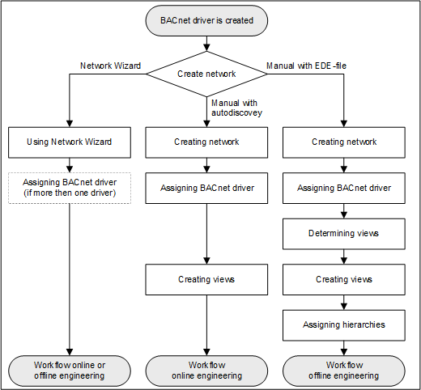

Create a Field Network for 3rd Party Integration
A network can be created manually or with the network wizard.

2a – Create a Network Using the Network Wizard
- Select Project > Field Networks.
- Select the Network Wizard tab.
- Open the Subsystem Selection expander and perform the following steps:
a. Available subsystems: Select the subsystem from the drop-down list. Click Next page .
.
b. Network name: Enter a network name.
c. Network description: Enter a network description. Click Next page.
d. Station Selection: Select the Main Server from the drop-down list.
e. Driver selection: Select the communication driver from the drop-down list or create a new driver. Click Next page.
f. Import into views: Select the required views check boxes and a the Parent Node Name and the Parent Node Description into the text fields. Click Next page.
g. Import devices: Select an option to import the data files. Click Next page.
h. Summary information: Check your entries. - Click Run Configuration
 .
. - Conduct the additional steps as per Online or Offline (see below) Engineering.
2b – Manually Create Network for AutoDiscovery
To manually create a network, proceed as follows:
Create the Network
- Select Project > Field Networks > Management System > Servers > Main Server > Drivers.
- Click New
 , and select New BACnet driver.
, and select New BACnet driver. - In the New object dialog box, enter a name and description.
- Click OK.
- The new driver is available in System Browser.
- Click Save
 .
.
Assign the Driver
- Select Project > Field Networks > [Network name].
- Click the BACnet tab and open the Network Setting expander.
- From the drop-down list, select the driver.
- Click Save .
Create the Views
- Select Project > System Settings > Views.
- Select the Views tab and enter the data for:
- Description (name in the Management View)
- Root description (name of the root folder)
- Root name (system name for the root folder)
- In the Type drop-down list box, select one of the following options:
‒ User View
‒ Logical
‒ Physical - Click Save .
- Repeat steps 2 and 3 for additional views.
- Conduct the additional steps as per Online Engineering (see below).
2c – Manually Create a Network for EDE File
Proceed as follows to manually create a network:
Create the Network
- Select Project > Field Networks > Management System > Servers > Main Server > Drivers.
- Click New , and select New BACnet driver.
- In the New object dialog box, enter a name and description.
- Click OK.
- The new driver is available in System Browser.
- Click Save .
Assign the Driver
- Select Project > Field Networks > [Network name].
- Click the BACnet tab and open the Network Setting expander.
- From the drop-down list, select the driver.
- Click Save .
Determine the Views from the Import File
Views can only be determined by importing the EDE file in the system.
- Click the Import tab.
- Click Browse and select the file for import.
- Click Open.
- In the Source Items list, click
 to select all files.
to select all files. - Click Import.
- A confirmation message displays.
- Click Yes.
Create the Views
- Select Project > System Settings > Views.
- Select the Views tab and enter the data for:
- Description (name in the Management View)
- Root description (name of the root folder)
- Root name (system name for the root folder)
- In the Type drop-down list box, select one of the following options:
‒ User View
‒ Logical
‒ Physical - Click Save .
- Repeat steps 2 and 3 for additional views.
- Conduct the additional steps as per Online Engineering (see below).
Assign the Hierarchies
- Select Project > Field Networks > [Network name].
- Select the Import tab.
- Open the Hierarchies Mapping expander.
- All existing hierarchies are displayed in the Hierarchy Name column.
- In System Browser, select the new view, for example, Logical.
- An object for the selected view is displayed in System Browser.
- Drag the object to the Hierarchies expander in the Import hierarchy under this node column, of the corresponding line, for example, Logical.
- Conduct the additional steps as per Offline Engineering (see below).